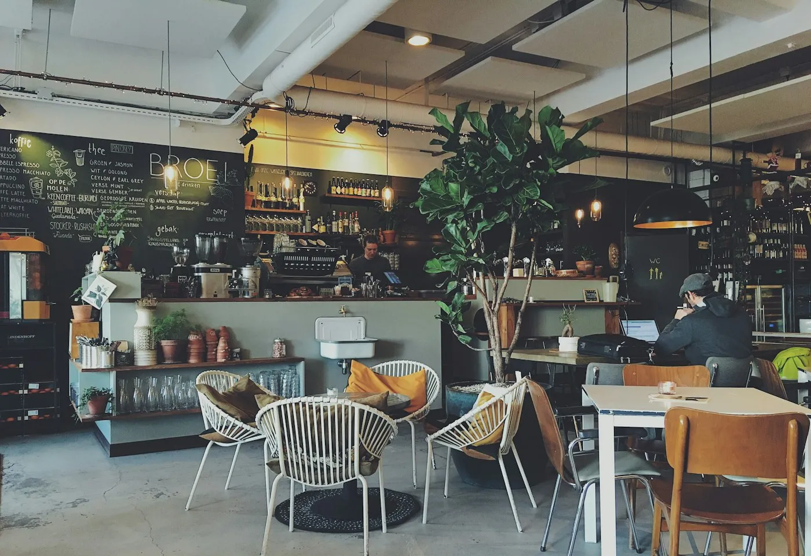
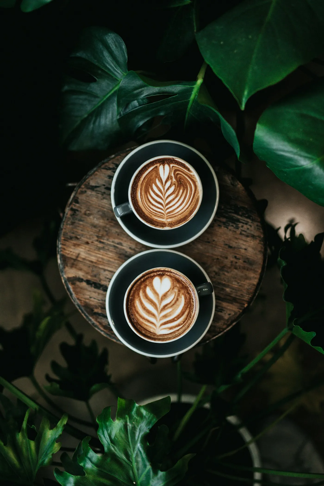
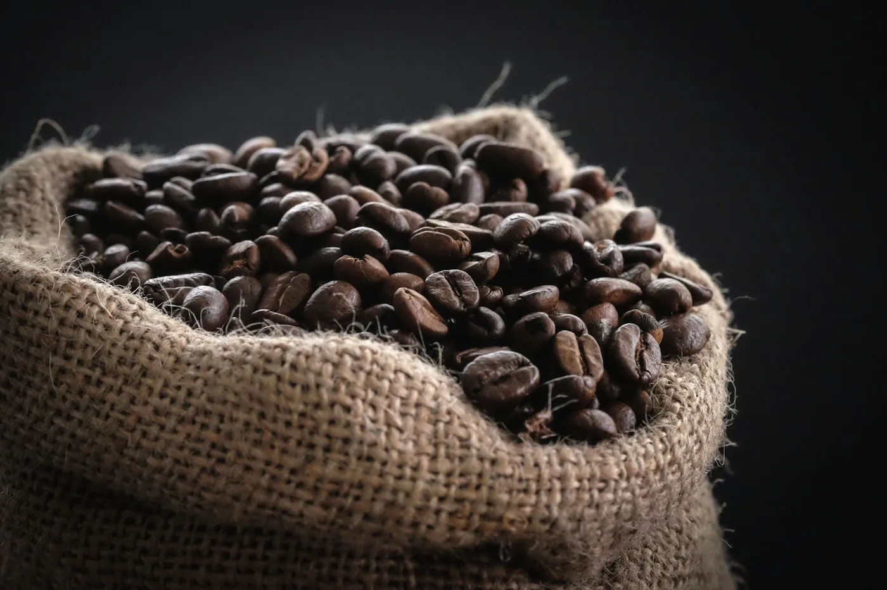
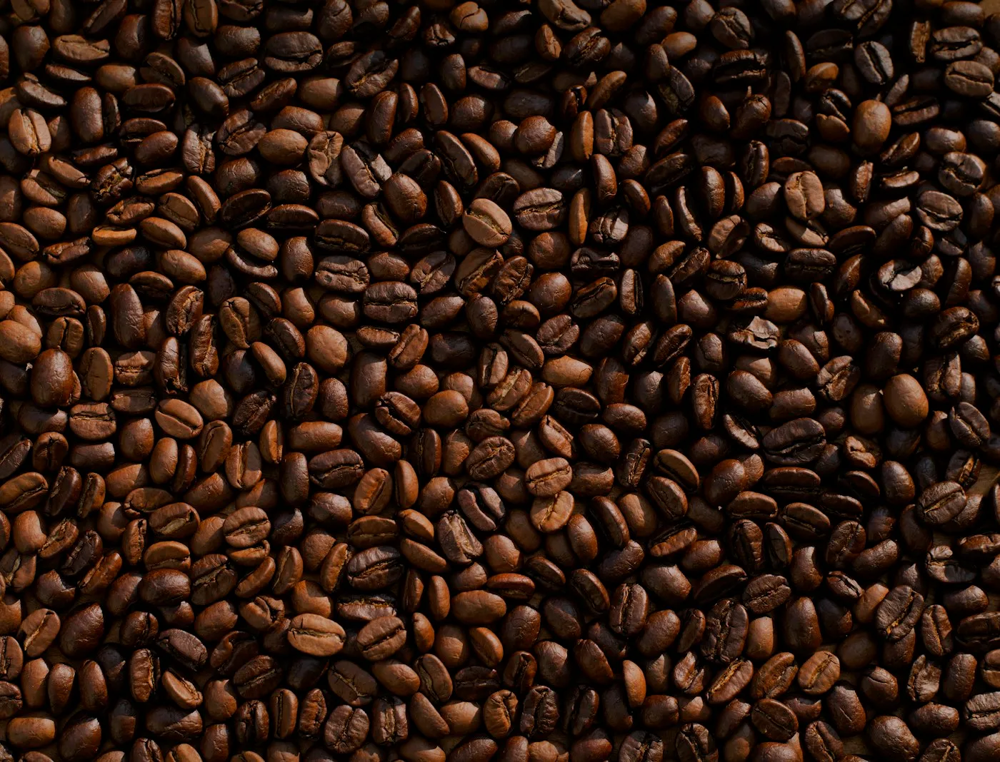
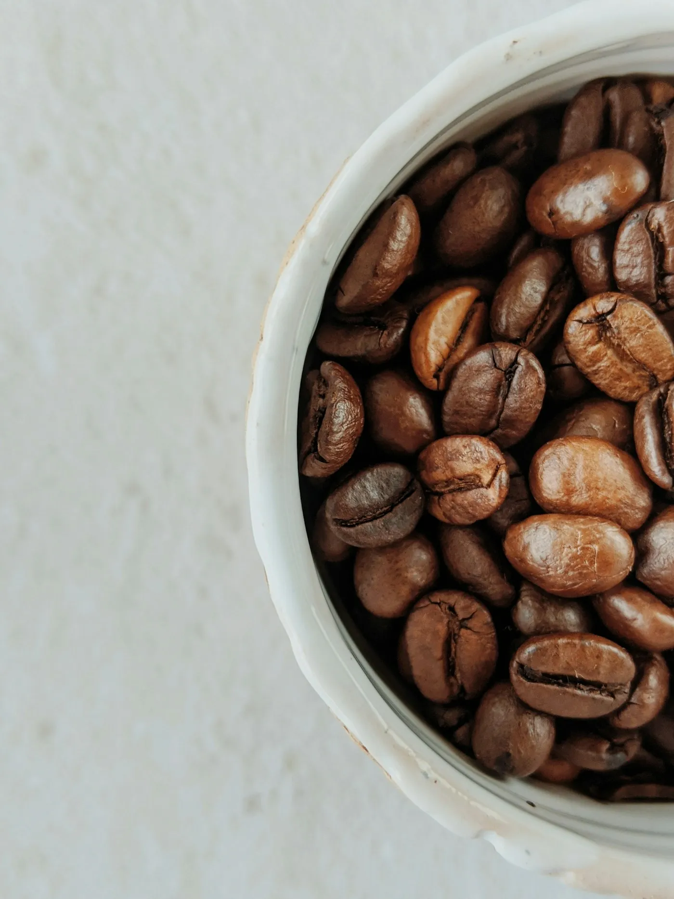

Origem antes de marketing
Pagamos acima do preço de mercado e mantemos relações de longo prazo com as cooperativas e famílias produtoras. O nome de quem cultivou vai na etiqueta.
Não tínhamos uma grande empresa nem um plano infalível. Tínhamos uma mesa, dois cadernos de prova e a convicção de que um café bem torrado não precisa de levantar a voz.


Em 2019, Ana deixou uma carreira em comunicação e Pedro trocou turnos de cozinha por sacos de café verde. Alugaram um espaço na Miguel Bombarda, compraram uma torradora usada e passaram meses a provar lotes com amigos que aceitavam ser cobaias.
A primeira encomenda foi para uma livraria do bairro. A segunda, para uma vizinha que queria café para a mãe. Foi assim que a Torra Lusa cresceu: devagar, de pessoa em pessoa, sem pressa de chegar a todo o lado.
Hoje continuamos a torrar em lotes de 12 kg, todas as semanas. Provamos cada lote antes de o pôr à venda. Se não nos apetecer beber uma segunda chávena, não sai daqui.
Ana e Pedro, fundadores
Não somos perfeitos, mas preferimos fazer menos e fazer com cuidado. Estas ideias decidem o que compramos, como torramos e o que vai dentro da caixa.
Pagamos acima do preço de mercado e mantemos relações de longo prazo com as cooperativas e famílias produtoras. O nome de quem cultivou vai na etiqueta.
Torramos semanalmente em pequenas quantidades. Preferimos esgotar um lote a vender café com meses de prateleira. A data de torra está sempre impressa.
Sacos recicláveis, cartão FSC e zero plástico nos envios. Se puderes, devolve-nos o saco no balcão: recebes 1 € na próxima compra.
Ana e Pedro abrem a torrefação na Miguel Bombarda com uma torradora de 5 kg e uma lista de correio feita à mão.
Nasce a assinatura mensal depois de clientes pedirem “só para não ter de me lembrar”. Hoje há lotes rotativos e pausas quando faz falta.
Abrimos a sala ao lado. O espaço passa a acolher provas públicas e conversas com produtores, sempre com entrada livre.
Sete anos, dezenas de origens e a mesma torradora. Mudaram os lotes e as caras ao balcão; a ideia de fazer devagar ficou.
Trabalhamos com cooperativas e famílias que conhecemos pelo nome. Estas são três relações que duram há mais de uma colheita.

Cooperativa de pequenos produtores a 2 100 metros. Colheita manual e secagem em camas elevadas.

Vinte e quatro famílias associadas. Lotes separados por produtor e pagamento semanal durante a colheita.

Estação de lavagem com 600 membros. Variedades SL28 e SL34, fermentação de 18 horas.
As imagens são ilustrativas. Os nomes e relações comerciais fazem parte da narrativa desta loja de demonstração.
Os lotes mudam com as colheitas. Esta semana há café novo na loja e sempre uma origem para descobrir.